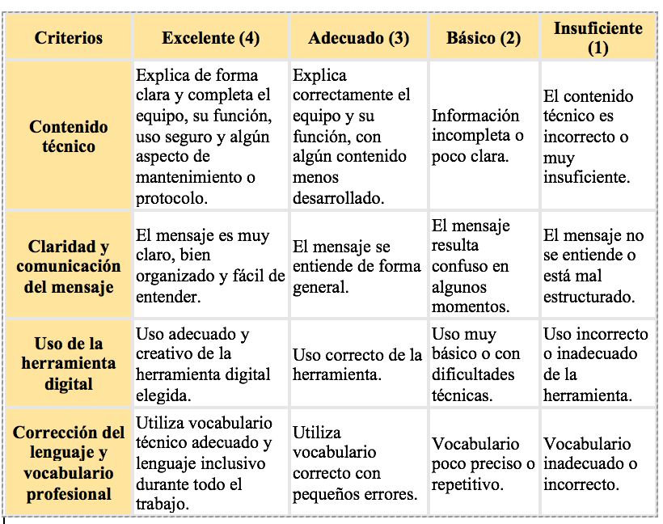

¿En qué consiste este trabajo?
Además de la infografía, deberás crear UN segundo producto digital, a elegir, para comunicar información sobre el mismo equipo dental de una forma diferente y creativa.
Este trabajo te permitirá demostrar tu capacidad para explicar contenidos técnicos utilizando herramientas digitales.
Opciones a elegir (elige solo UNA)
Puedes realizar uno de los siguientes productos:
- Podcast informativo.
- Vídeo explicativo.
- Breakout digital.
- Mini videojuego educativo.
El producto debe explicar, de forma adaptada al formato elegido:
Qué equipo es.
Para qué se utiliza.
Normas básicas de seguridad.
Algún aspecto clave de su uso o mantenimiento.
Podcast o vídeo: 3–5 minutos
Breakout o videojuego: actividad breve y funcional.
Herramientas digitales
Podcast: Anchor, Audacity, Teams…
Vídeo: Clipchamp, WeVideo, Canva…
Breakout: Genially, Google Forms…
Videojuego: Genially, Scratch (nivel básico).
Entrega
Enlace al producto en TEAMS / Aula Virtual.
Evaluación
Se evaluará mediante rúbrica, visible en el REA.
Se tendrá en cuenta el contenido, la claridad y el uso adecuado de la herramienta digital.
Accesibilidad (DUA)
Puedes elegir el formato que mejor se adapte a tus fortalezas.
Trabajo individual o en pequeño grupo.
Se valorará la claridad del mensaje por encima de la complejidad técnica.
